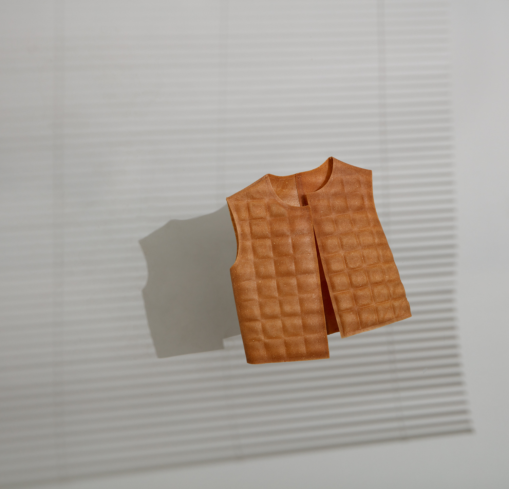

PEELSPHERE® X Oatly
In "The Problem Solver - The Evolution of Fabrics," Wallpaper first met new material designer Youyang Song, who led an interdisciplinary team of designers and scientists actively developing much-needed new materials.
The PEELSPHERE® new material, affectionately known as the "super skin" by Song, gradually achieved a zero-pollution closed-loop design system through three stages of recycling, reprocessing, and redesign of biological waste, providing some solutions to the current problem of bio-waste disposal and reducing the burden of government waste management and disposal. This practice of transforming biological waste into new materials highlights the importance of future biomaterials in the current environmental crisis and proposes new solutions for the combination of biotechnology and material experimentation.
The PEELSPHERE® new material was also shortlisted for the 2021 Wallpaper* Design Award for "Best Sustainable Design." Looking back at the birth of PEELSPHERE®, it is closely related to the city where Youyang Song lives and her ideas for change. Berlin, where she studied, produces about 60,000 to 70,000 tons of biological waste each year, of which about 17% is fruit waste, mainly used in the fields of fertilizer and natural gas production. She hoped to intervene from the perspective of a designer, turning waste into treasure, and thus proposed the concept of circularity for new materials by observing the lifespan of traditional textiles, creating an ecosystem through recycling, redesigning, and remanufacturing, thereby promoting sustainable lifestyles. Thus, the birth of PEELSPHERE® gave biological waste the possibility of becoming new materials.

In this issue, Wallpaper* interviews new material designer Youyang Song, asking whether focusing on sustainability can bring together more fields, generate more perspectives, and bring about change.
Youyang Song divided her research on the PEELSPHERE® new material into four stages: "seed, germination, seedling, and preparation for flowering." During her studies, she collaborated with German scientific research institutions
to conduct practical experiments on bacterial staining and mycelium materials, which planted the seed in her mind. Frustrated by the lack of biodegradable materials to assist in her design work, she shifted her focus to creating materials.
A series of attention quickly propelled her growth, and the PEELSPHERE® new material has since won numerous awards, including the German Sustainable Development Award supported by former German Chancellor Merkel, the Kering K-Gen, the
German New Materials and Technology Award, and the all-Innovate Award from Oxford, among others.
Youyang leads a team of material scientists, product designers, and business development experts. PEELSPHERE's new material is not
just limited to the laboratory stage but has become a new strategy for various industries, building a "sustainable" production and life.
After receiving these honors, Youyang Song reflected on how to use material innovation to promote a healthy, comfortable, balanced, and self-harmonious lifestyle, and to influence a sustainable future.
Receiving the invitation from "Wallpaper" and Mercedes-Benz, Youyang expressed: "I am very happy to be able to use PEELSPHERE material to create an artistic body for the all-new pure electric EQE. This is a novel, interesting and challenging project at
the same time. Because in the past, PEELSPHERE is often used in cross-industry cooperation in the role of replacing "soft" applications such as leather. But this time, we are going to create an artistic model that is both aesthetically
pleasing and protective and also challenges the material's processability. Therefore, in the artistic cooperation, we not only fully explored and communicated in terms of the overall direction and concept but also considered how to blend
PEELSPHERE's style with Mercedes-Benz's style and temperament in terms of specific colors, patterns, styles, and processing techniques."
She said: "So far, PEELSPHERE has developed four types of new materials. The first one is based on fruit waste, the second is a translucent natural plant-dyed material, the third is a material like leather, and the fourth is a
hard material such as a biodegradable button." In the end, Youyang chose one of the materials, Indigo, as the main body of the new all-electric EQE art. Indigo refers to natural indigo dye derived from the plant Polygonum tinctorium, which
has a long history of dyeing. Youyang introduced: "natural indigo dye provides various shades of blue from very clear to deep blue, with very good lightfastness. In the process of developing the material, we also optimized the processing
of Indigo, making the process simpler, healthier, easier to operate, and color-stable."
At the source of her materials, Youyang Song initially collaborated with local juice factories to use fruit waste as production materials, and now has established stable partnerships with some enterprises. "We focus on circular design thinking, from obtaining
waste such as fruit peels or oat bran, to producing materials, making products, and finally degrading or recycling materials, which runs through the whole process. PEELSPHERE's materials are inspired by nature and eventually return to
the soil to nurture new life," said Youyang Song. Currently, PEELSPHERE® has developed four new types of materials. The first is a material based on fruit waste, the second is a semi-transparent material naturally dyed with plants, the
third is a leather-like material, and the fourth is a hard material such as biodegradable buttons. Does sustainable design require sacrificing some functionality and aesthetic value to achieve it? Youyang Song does not want the new materials
she creates to be just substitutes, but to fundamentally change users' concepts and awareness. Aesthetic value and design are also the primary principles of material innovation. Through different processing techniques, materials that originally
retained food residue textures have new possibilities and can be adapted to more applications, such as becoming bags, vases, clothing, etc.
Although PEELSPHERE's new materials cannot compete with the huge food waste
problem in the present, when these new materials appear in every corner of daily life, big or small, we must have taken the first step towards zero pollution. Regarding the wider application of new materials, Youyang Song hopes that materials
can not only enter thousands of households as daily necessities but also shine in important high-tech fields. In the slow development and subtle influence on many industries, PEELSPHERE's new materials have connected many fields and will
gather designers and brands pursuing sustainability. In February of this year, fashion design students created fashion using her new materials as "fabric" and walked on the runway of Paris Fashion Week. She also maintains cooperation with
scientific research institutions, constantly exploring the possibility of new biomaterials while maintaining the leading edge in biotechnology. Seeking like-minded brand collaborations to advance together is also her expectation. There
are many ways to circulate materials and products, including production and processing, and different brands and industries have certain focus areas. PEELSPHERE's new materials mainly replace leather materials, and cooperation with brands
is to join their circular mechanisms to establish a more diverse ecological cycle.
In collaboration with the sustainable fashion brand Pangaia, PEELSPHERE® has further perfected their regenerative natural system, enabling the entire supply chain to embark on a path towards a positive, sustainable supply chain for the planet, where the ultimate goal is to give back to nature rather than taking from it. As an innovation-driven brand, PEELSPHERE not only creates high-performance green materials but also seeks to explore the aesthetic and application potential of materials. In a recent collaboration with Oatly, PEELSPHERE explored new possibilities for oats by designing bio-based materials from oat milk by-products. Oat bran, a by-product of oat milk, was transformed into a semi-transparent bio-fabric, with different processing methods used to give the material more potential applications. The material was then transformed into jackets, stool covers, tabletop decorations, screens, and more, bringing the new material into more product areas and breaking with traditional thinking, demonstrating the potential of the material. PEELSPHERE hopes to incorporate their designs into everyday life, promoting a healthier and more sustainable lifestyle, which is also the story that Oatly is practicing.
PEELSPHERE® new material is a comprehensive solution that combines production, design, products, and ecology, allowing us to see the true direction of sustainable development from a more comprehensive perspective. Youyang Song hopes to gather more communities through these practices. She said: "We hope to provide a new perspective on modern life through our design language, so that users can feel that they are also contributing to environmental protection while using our materials, thereby influencing more people around them. Slowly, the concept of environmental protection and sustainability will gradually become deeply rooted in people's hearts, which is also our vision."
12/Sep/2023 by Wallpaper